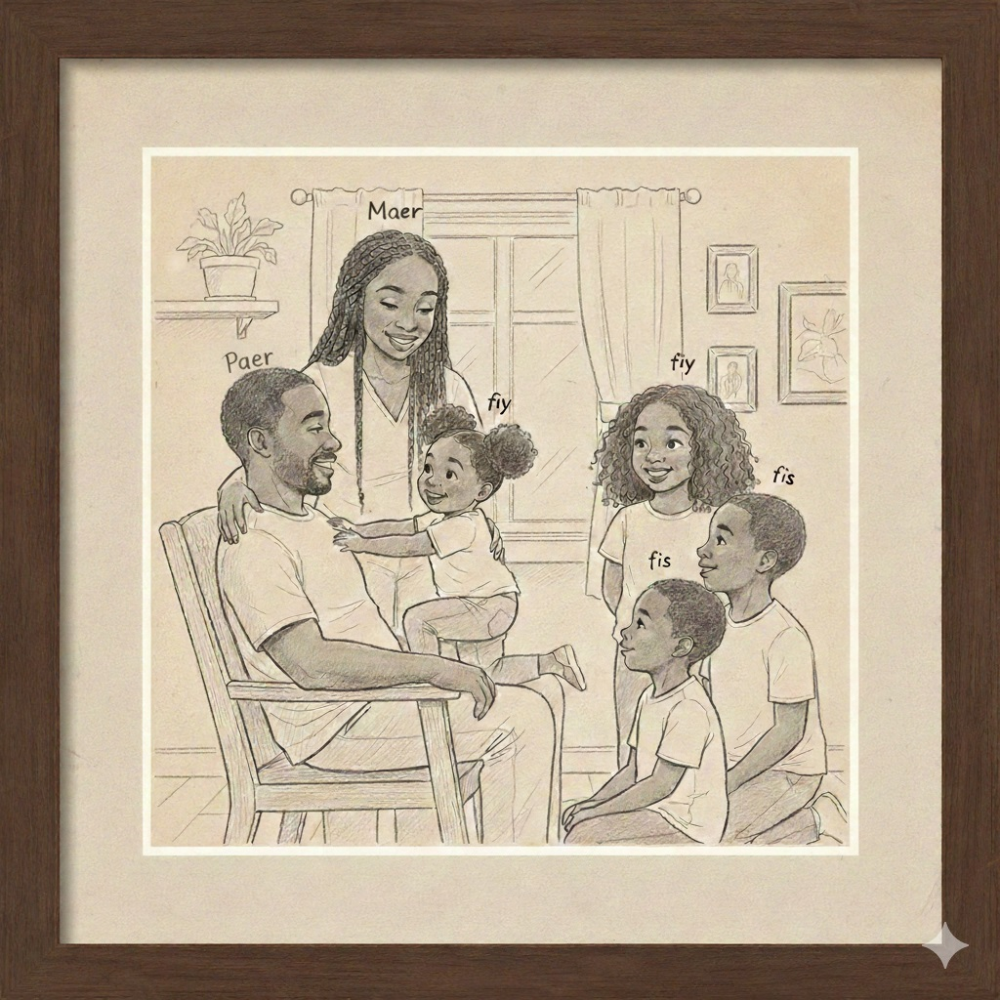

The boy has a dog.
Section 2.1 Family
Subsection 2.1.1 Vocabulary
Here are the words we will be using for this section:
| LC | IPA | Meaning |
|---|---|---|
| wé | [we] | yes, yeah |
| çé | [se] | it is, to be |
| shyin | [ʃjɛ̃] | dog |
| sha(t) | [ʃat] | cat |
| misye | [misyø, misye] | mister, sir, gentleman |
| in | [ɛ̃] | a, an |
| fenm | [fɑ̃m] | woman, wife |
| madamm | [madɑ̃m] | Mrs., wife, lady |
| garçon | [garsɔ̃] | boy, son |
| fiy | [fij] | daughter, girl, woman |
| osi(t) | [osi] | also, too |
| li | [li] | it, he/him, she/her |
| itou | [itu] | also, too |
| non | [nɔ̃] | no |
| -la | [la] | the (post-nominal) |
| -layé | [laye] | those (post-nominal) |
| ki | [ki] | who, what, which |
| gin | [gɛ̃] | to have |
| a | [a] | to, at, per |
| é | [e] | and |
| pær | [pær] | father |
| mær | [mær] | mother |
| fis | [fis] | son |
| yé | [ye] | they, to be (at end of a sentence) |
| frær | [frær] | brother |
| sœr | [sœr] | sister |
| jish | [jiʃ] | just |
| pa | [pa] | not (negation marker) |
| le | [le] | "the" for plurality of nouns |
Subsection 2.1.2 Basic Sentence Structure
Basic sentence structure for Louisiana Creole is SVO just like in English:
| subject + verb + object |
Subject is what we are talking about. It can be a noun or a pronoun.
We will discuss verbs and tenses in a later section.
Object is a noun or pronoun that receives or is the target of the subject.
Example 2.1.2.
In LC the example sentence above would be:
| "Garçon gin in shyin." |
A general rule for speaking in LC is to leave out any unnecessary information. Many prepositions are left out of sentences if they can be implied. We provide just enough information to get out point across. Notice we don’t use a "the" term for the boy (garçon) since it adds no additional information to the sentence. "The" would only be necessary if there were several boys present and we needed to specify a certain one or group.
Subsubsection 2.1.2.1 The Word for "The" (Post-Nominal Determiners)
Post-nominal determiners are little words or phrases we add to the end of a noun to indicate plural and specifics. Think about it as when we say "the", the term for "the" goes at the end. We could have said
and it would have been an equivalent sentence. We can use the standard French form of "la" in front of a noun as well.
When we see the dash we want to make sure that we pronounce it as a separate syllable with a pause. "Shyin-la" is pronounced as "shyin la" not "shyinla". Post nominal determiners will always be denoted with a hyphen "-" in front when given in the vocab sections, like "-la" and "-layé" above.
| "Garçon-la gin in shyin." |
| "La garçon gin in shyin." |
Subsubsection 2.1.2.2 Saying "No" (Negation)
To make a sentence negative, you use the word pa. Where you put this word depends on the type of action:
-
"pa" before a verb means no for this moment or in general.
-
"pa" after a verb is a harder, more permanent no.
Subsubsection 2.1.2.3 "To Be"
LC handles the "to be" differently than English. Sometimes we have a verb for it, and sometimes we don’t.
-
Zero Copula: When you are using an adjective to describe someone (like "He is sick"), you do not need a word for "is" or "am".
-
Equating Nouns: If you are saying one thing is another thing (like "He is a man"), you must use çé .
-
Questions: When asking a question like "Where are you?", the verb "to be" changes to yê and moves to the end.
Subsubsection 2.1.2.4 Possessive Noun Phrases
In Enlish when a noun (person, place or thing) owns or possesses another noun we usually add an apostrophe and "s" to the possessor noun. For example: John’s car.
In French we use "de/du" to indicate possession ("of" or "from"). The noun being possessed comes first, "car of John" in this case. In Louisiana Creole we follow the same structure as French but we can use "de", which is not common, except for some already made constructs like "dekann" (sugar cane) or "ark-d-syel" (rainbow), "a", or more importantly, as stated above, we leave all of that out as unnecessary information and just say "car John".
Example 2.1.8.
-
Shyin John. (most common)
-
Shyin a John. (not common)
-
Shyin d John. (least common unless a pre-construct)
Subsection 2.1.3 Immersive Reading: Famiy Duklos
Using the information we learned so far we should be able to get through the section below and answer some questions all in Louisiana Creole!
Misye Duklos çé in nonm. Madamm Duklos çé in fenm. Jean çé in garçon, é Henri çé in garçon. Jean é Henri çé de garçon. Nicole çé in fiy, é Yvonne çé in fiy osit. Nicole é Yvonne çé de fiy.

Minet çé in sha. Médor çé in shyin. Fido çé in shyin osit. Médor é Fido çé de shyin.
-
Médor çé in shyin, li?
-
Minet çé in shyin itou, li?
-
Fido çé in shyin, li?
-
Misye Duklos çé in nonm, li?
-
Madamm Duklos çé in fenm?
-
Jean çé in fenm itou, li?
-
Yvonne çé in garcon itou, li?
-
Henri çé in garçon?
Garçon-la çé Jean. Fiy-la çé Nicole. Shyin-layé çé Médor é Fido.
-
Ki fenm-la yê?
-
Ki nonm-la yê?
-
Ki de shyin yê?
-
Ki garçon-la yê?
-
Ki fiy-la yê?
-
Ki lê Duklos yê?
Jean gin in shyin, é Nicole gin in shyin osit. Médor shyin-la Jean, é Fido shyin-la Nicole. Yvonne gin in sha; Minet shat-la Yvonne.
-
Médor çé shyin-la a Henri?
-
Minet çé sha-la Nicole?
-
Fido çé shyin-la a Nicole?
-
Nonm-la çé Misye Duklos?
-
Fenm-la çé Madamm Duklos?,

Misye Duklos çé pær Jean; Jean çé fis Misye Duklos. Henri çé fis Misye Duklos osit. Misye Duklos çé pær Nicole é Yvonne. Misye Duklos gin de fis; li gin de fiy itou. Madamm Duklos çé mær Jean, Henri, Nicole é Yvonne. Madamm Duklos gin de fis é li gin de fiy.
-
Jean, li gin in pær, li?
-
Ki çé pær a Jean?
-
Misye Duklos, li gin de fis, li?
-
Ki çé lê fis a Misye Duklos?
-
Yvonne, li gin in mær?
-
Ki çé mær Yvonne?
-
Madamm Duklos, li gin de fiy é de fis?
-
Ki çé lê fiy é fis Misye é Madamm Duklos?
Jean çé frær Nicole; Nicole çé sœr Jean. Nicole çé sœr Henri é Yvonne itou. Li gin de frær é in sœr. Henri çé frær Jean, Nicole é Yvonne; li gin de sœr é in frær. Jean é Henri gin de sœr; yé gin in pær é in mær itou. Nicole é Yvonne gin de frær, é yé gin in pær é in mær itou.
-
Jean é Henri, yé gin de sœr?
-
Nicole é Yvonne, yé gin in pær?
-
Yé gin in mær osit?
-
Misye é Madamm Duklos, yé gin de fiy é de fis?
-
Nicole é Jean, yé gin in frær é in sœr?
-
Ki ça yê?
-
Médor é Fido, lê shyin a Henri? Non, Médor é Fido pa lê shyin a Henri; Médor çé shyin a Jean é Fido çé shyin a Nicole.
-
Jean é Henri, yé de nonm?
-
Nicole é Yvonne, yé osit de garçon?
-
Jean çé pær Henri?
-
Yvonne çé mær Nicole?
-
Nicole, li gin in sha?
Yvonne é Henri pa gin jish in sœr; Henri gin in frær é de sœr, Yvonne gin de frær é in sœr.
Subsection 2.1.4 Exercises
Checkpoint 2.1.19.
| f | r | æ | r | e | p | m | æ | o | s | é | j | r | æ | h |
| t | d | æ | œ | m | æ | r | é | o | n | s | p | h | j | æ |
| œ | p | h | t | m | s | é | n | d | p | æ | r | r | œ | s |
| s | œ | r | é | o | m | f | n | s | e | p | æ | œ | f | é |
| æ | d | s | e | p | m | n | s | h | y | i | n | t | d | é |
| œ | m | a | d | a | m | m | e | p | j | h | s | æ | r | é |
| r | f | é | t | s | d | h | y | s | n | o | n | m | œ | r |
| s | h | a | e | p | j | n | s | œ | æ | r | t | d | o | é |
| r | m | é | o | i | t | o | u | p | h | y | n | e | d | s |
| œ | f | s | e | h | d | y | æ | œ | r | é | o | s | i | n |
| æ | œ | m | i | s | y | e | r | p | d | t | o | æ | e | n |
| r | f | é | h | m | n | s | e | j | i | s | h | œ | s | é |
| f | i | y | p | h | d | e | o | r | æ | œ | é | p | t | j |
| œ | r | é | s | p | h | t | m | n | é | s | p | f | i | s |
| m | æ | œ | r | f | é | o | n | s | e | p | j | h | y | t |
Word Bank: